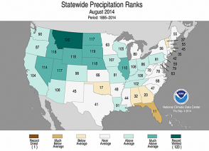
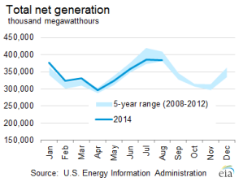
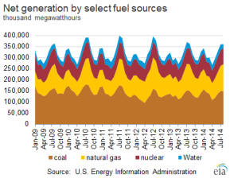
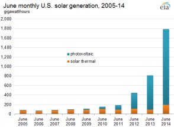
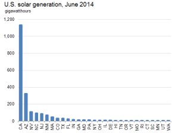

Electricity Monthly Update
With Data for August 2014 | Release Date: Oct. 24, 2014 | Next Release Date: Nov. 24, 2014
Previous Issues
Highlights: August 2014
- Wholesale electricity prices set 12-month lows in New England, New York City and the Mid-Atlantic, as natural gas prices fell below $2/MMBtu in the regions.
- Total U.S. coal stocks decreased by 4.3 million tons compared to the previous month and are down 21.5% from August 2013.
- Texas's (ERCOT) peak load reached 66.5 GW, just below its 68.4 all-time peak.
Key Indicators
| August 2014 | % Change from August 2013 | |
|---|---|---|
| Total Net Generation (Thousand MWh) |
383,494 | -0.1% |
| Residential Retail Price (cents/kWh) |
13.01 | 4.0% |
| Retail Sales (Thousand MWh) |
348,014 | -0.7% |
| Cooling Degree-Days | 292 | -1.7% |
| Natural Gas Price, Henry Hub ($/MMBtu) |
4.01 | 13.3% |
| Natural Gas Consumption (Mcf) |
923,476 | -0.6% |
| Coal Consumption (Thousand Tons) |
81,210 | -0.9% |
| Coal Stocks (Thousand Tons) |
121,042 | -21.5% |
| Nuclear Generation (Thousand MWh) |
71,129 | -0.3% |



Record solar output from utility-scale facilities due to photovoltaics in June 2014
 Source: U.S. Energy Information Administration, Form EIA-923 "Power Plant Operations Report"Electricity generation from solar facilities that are 1 megawatt or greater in capacity hit a record high in June 2014 at 2,061 gigawatthours largely because of the recent, rapid growth in photovoltaic capacity. Solar electricity output in June is a good indicator of the recent growth of the solar industry, because June has the highest monthly average of sunlight per day. Electricity output of U.S. utility-scale solar generators in June 2014 was 23 times the level in June 2005.
From 2005 through 2010, most solar generation from utility-scale facilities was from large solar thermal generators. In June 2005, generation from solar thermal units accounted for 97.9% of total utility-scale solar generation.
In 2011, photovoltaic generation grew at a much higher rate than the growth in thermal generation, even though solar thermal generation was up as well. The growth curve of total solar generation since 2011 is primarily shaped by photovoltaic generator growth. In 2013, the photovoltaic share was 86.1% of the total solar contribution to the grid. The photovoltaic share fell to 83.1% in June 2014 as a result of several large solar thermal plants including Ivanpah, Genesis, and Solana coming online. However, photovoltaic generation is still the biggest growth driver, as the total more than doubled from June 2013 to June 2014.
Most of the growth in U.S. solar output is in California. In June 2014, well over half of total solar generation came from plants in California. Arizona, Nevada, North Carolina, and New Jersey, respectively, followed California as the largest solar contributors to the grid.
 Source: U.S. Energy Information Administration, Form EIA-923 "Power Plant Operations Report".Solar capacity in the United States has grown at smaller units on residential and commercial rooftops and at other smaller facilities as reported by distribution utilities, which are typically net-metered (see April 2014 Electric Monthly Update report for further detail).
Generators, including solar units that are expected to come online soon, are shown on this map.
Principal Contributor:
Ronald Hankey
(Ronald.Hankey@eia.gov)
End Use: August 2014
Retail rates/prices and consumption
In this section, we look at what electricity costs and how much is purchased. Charges for retail electric service are based primarily on rates approved by state regulators. However, a number of states have allowed retail marketers to compete to serve customers and these competitive retail suppliers offer electricity at a market-based price.
EIA does not directly collect retail electricity rates or prices. However, using data collected on retail sales revenues and volumes, we calculate average retail revenues per kWh as a proxy for retail rates and prices. Retail sales volumes are presented as a proxy for end-use electricity consumption.
Average revenue per kWh by state
August continued the trend of rising revenue per kilowatthour averages, up for the 21st month in a row compared to the same month one year prior. Though regular readers may notice August's 10.92 cents per kilowatthour is actually slightly below July's 11.01 cents per kilowatthour average, year-over-year comparisons are often the best way to make an apples-to-apples comparison. Electricity industry metrics are highly dependent upon weather as well as prices and demand in other energy markets, most notably natural gas, and these can fluctuate greatly from month-to-month and season-to-season. Year-over-year comparisons help eliminate much of this static.
On an individual state level, 40 states had increases compared to last August, with Rhode Island recording the largest increase, up nearly 20%. Alaska and Illinois had the second and third largest year-over-year increases, respectively, with both states up over 12%. Ten states and the District of Columbia had average revenue per kilowatthour decreases relative to last year, with West Virginia down over 5%, and New Jersey and Wisconsin next with declines of just over 2%.
Total average revenues per kilowatthour averaged 10.92 cents in August, 3.1% higher than last year. The residential sector, the largest sector in August by sales volumes, also had the largest average revenue increase, up 4% to 13.01 cents per kWh. The commercial sector increased 3.3% to 11.07 cents per kWh and the industrial sector increased 1.8% to 7.38 cents per kWh. Transportation was the only sector showing a decline this month, down 0.1% to 10.37 cents per kWh.
Total retail sales volumes were down 0.7% from last August. Both the residential and commercial sectors had sales volume decreases compared to last year. These sectors are more weather dependent than the industrial or transportation sectors and the mild August weather dampened electricity demand. States along the heavily populated corridor from North Carolina to Massachusetts experienced weather cooler than last year and much cooler than the typical August, limiting climate control demand. The industrial and transportation sectors were both up slightly this August. They are less affected by weather conditions and much smaller than the residential and commercial sectors.
Retail sales
As is usually the case in August, electric industry retail sales volume trends generally mirrored weather patterns, as demand for climate control appliances rises and falls with temperatures. States that experienced increases in cooling degree days (hotter weather), largely in the Southeast, lower Midcontinent, and along the West Coast, had increases in retail sales volumes. States that experienced decreases in cooling degree days (cooler weather), largely in the Mid-Atlantic, Northeast and Rocky Mountain states, also experienced decreases in retail sales volumes.
The outliers to this correlation between weather and retail sales volumes were North Dakota, West Virginia, Wyoming and Kentucky. North Dakota, West Virginia and Wyoming are all located in areas that experienced cooler weather and were surrounded by states with lower retail sales volumes and yet showed increased retail sales volumes. These three states also happen to be experiencing large increases in oil and gas exploration and production activity, which likely increased electricity demand regardless of slightly cooler summer weather. On the other hand, Kentucky showed a fairly large increase in cooling degree days but had falling retail sales volumes. This occurred because Kentucky's year-over-year comparison continues to be affected by the closure of a large energy consumer last fall, the United States Enrichment Corporation facility in Paducah, Kentucky.
Cooling degree days were up most in the center of the country, Southeast and West Coast compared to last year with Kansas, Missouri and Illinois recording the highest year-over-year increases in August. The largest drops in cooling degree days occurred in the Mid-Atlantic, Northeast and up and down the Rocky Mountains. Virginia, in fact, recorded its tenth coolest August on record, according to the National Climactic Data Center.
Resource Use: August 2014
Supply and fuel consumption
In this section, we look at the resources used to produce electricity. Generating units are chosen to run primarily on their operating costs, of which fuel costs account for the lion's share. Therefore, we present below, electricity generation output by fuel type and generator type. Since the generator/fuel mix of utilities varies significantly by region, we also present generation output by region.
Generation output by region

In August 2014, net generation in the United States was almost flat compared to the previous year, decreasing by only 0.1%. This coincides with the slight decrease of 1.7% in U.S. population-weighted cooling degree days compared to last August. At the region-level, changes in electricity generation were mixed. The Central, Southeast, and Florida saw a slight increase in electricity generation compared to August 2013, while the Northeast, MidAtlantic, West, and Texas saw slight decreases in electricity generation.
Compared to the previous August, the only regions that saw an increase in electricity generation from coal was Florida, Central, and the Southeast, with each seeing only small increases compared to last year. All other regions only saw slight decreases in electricity generation from coal, with the MidAtlantic seeing the largest percentage decrease. The change in electricity generation from natural gas was also mixed. The MidAtlantic, Southeast, Florida, and Texas saw increases in natural gas generation, while the Northeast, Central, and West saw slight decreases compared to the previous year.
Total electricity generation from nuclear in the U.S. was nearly flat compared to August 2013, decreasing by only 0.3%. For the third consecutive month, the Central region had the largest percentage increase in nuclear generation compared to the previous year. This occurred because the Fort Calhoun nuclear plant was offline in August 2013 (and Fort Calhoun nuclear plant had been offline since May 2011 due to damage caused by severe flooding). In August 2014, Fort Calhoun nuclear plant was operating at full capacity. Except for the Northeast, electricity generation from hydroelectric generators decreased in all regions of the country compared to August 2013.
Fossil fuel consumption by region
The chart above shows that the change in total coal consumption mirrored the change in electricity generation from coal in each region.
The second tab compares natural gas consumption in August 2013 and August 2014 by region. This consumption pattern mostly mirrored the change in electricity generation from natural gas, with the Central region having the largest percentage change in natural gas consumption for the second consecutive month.
The third tab presents the change in the relative share of fossil fuel consumption by fuel type on a percentage basis, calculated using equivalent energy content (Btu). This highlights changes in the relative market shares of coal, natural gas, and petroleum. Coal increased its share of total fossil fuel consumption at the expense of natural gas in the Central and West regions. In the Northeast and MidAtlantic, natural gas increased its share of total fossil fuel consumption at the expense of coal. In the Southeast, Florida, and Texas, the shares of both coal and natural gas remained relatively flat compared to last August.
The fourth tab presents the change in coal and natural gas consumption on an energy content basis between August 2013 and August 2014 by region. Once again, the changes in total coal and natural gas consumption were very similar to the changes seen in total coal and natural gas net generation in each region.
Fossil fuel prices
To gain some insight into the changing pattern of consumption of fossil fuels over the past year, we look at relative monthly average fuel prices. A common way to compare fuel prices is on an equivalent $ / MMBtu basis as shown in the chart above. For the second consecutive month, the price of natural gas at Henry Hub decreased from the previous month, going from $4.14 / MMBtu in July 2014 to $4.01 / MMBtu in August 2014. The natural gas price for New York City (Transco Zone 6 NY) decreased for the seventh consecutive month, going from $2.73 / MMBtu in July 2014 to $2.50 / MMBtu in August 2014. Like many natural gas prices in the Northeast, the New York City natural gas price is now well below the price of natural gas at Henry Hub. This is mainly due to the growth of natural gas coming out of the Marcellus region and a slight increase in pipeline capacity to the Northeast.
The New York Harbor residual oil price decreased from the previous month, going from $17.78 / MMBtu in July 2014 to $16.89 / MMBtu in August 2014. Regardless, oil used as a fuel for electricity generation is almost always priced out of the market.
A fuel price comparison based on equivalent energy content ($ / MMBtu) does not reflect differences in energy conversion efficiency (heat rate) among different types of generators. Gas-fired combined-cycle units tend to be more efficient than coal-fired steam units. The second tab shows coal and natural gas prices on an equivalent energy content and efficiency basis. The spread between the Henry Hub natural gas price and the price of Central Appalachian coal on a $ / MWh basis remained nearly the same compared to last month. However, because of the continued decrease in the New York City natural gas price, the price of Central Appalachian coal on a $ / MWh basis continues to be higher than the New York City natural gas price.
The conversion shown in this chart is done for illustrative purposes only. The competition between coal and natural gas to produce electricity is more complex. It involves delivered prices and emission costs, the terms of fuel supply contracts and the workings of fuel markets.
Regional Wholesale Markets: August 2014
The United States has many regional wholesale electricity markets. Below we look at monthly and annual ranges of on-peak, daily wholesale prices at selected pricing locations and daily peak demand for selected electricity systems in the Nation. The range of daily prices and demand data is shown for the report month and for the year ending with the report month.
Prices and demand are shown for six Regional Transmission Operator (RTO) markets: ISO New England (ISO-NE), New York ISO (NYISO), PJM Interconnection (PJM), Midwest ISO (MISO), Electric Reliability Council of Texas (ERCOT), and two locations in the California ISO (CAISO). Also shown are wholesale prices at trading hubs in Louisiana (into Entergy), Southwest (Palo Verde) and Northwest (Mid-Columbia). In addition to the RTO systems, peak demand is also shown for the Southern Company, Progress Florida, Tucson Electric, and the Bonneville Power Authority (BPA). Refer to the map tabs for the locations of the electricity and natural gas pricing hubs and the electric systems for which peak demand ranges are shown.
In the second tab immediately below, we show monthly and annual ranges of on-peak, daily wholesale natural gas prices at selected pricing locations in the United States. The range of daily natural gas prices is shown for the same month and year as the electricity price range chart. Wholesale electricity prices are closely tied to wholesale natural gas prices in all but the center of the country. Therefore, one can often explain current wholesale electricity prices by looking at what is happening with natural gas prices.
Wholesale prices

This was a very different August than is usually the case in the wholesale electricity markets. Wholesale electricity prices in August are typically near or at the highest levels for the entire year. This August however, New England (ISONE), New York City (NYISO) and the Mid-Atlantic (PJM) all set 12-month low prices for the year. New England set its new rolling 12-month minimum price on August 15 at $27.56/MWh, New York City set its 12-month minimum price on August 14 at $32.89/MWh and Mid-Atlantic set its 12-month minimum on August 15 at 32.71/MWh. Mid-August is typically a time of high electricity demand and prices, so to set yearly minimums during this time is very unusual.
The low electricity prices during this time (August 14-15) is partially due to lower electricity demand, or load, on these days. ISONE, NYISO and PJM loads were 25-28% below August 2014 highs on those days, and August peak loads this year were not very high themselves compared to other years. Also, and possibly more important, were natural gas prices in these areas.
Natural gas prices in New York City and Mid-Atlantic remained below $3/MMBtu for the entire month of August and reached a low of $1.87/MMBtu in New York City and $1.84/MMBtu in Mid-Atlantic in late August. Natural gas prices in New England remained below $3/MMBtu on all but two days in August and reached a low of $2.21/MMBtu during the month. In electricity markets where natural-gas fired generation sets the marginal price much of the time, and particularly during peak hours, low natural gas prices will almost invariably lead to low electricity prices.
The one region that had higher electricity prices in August, Texas (ERCOT) at $87.50/MWh, was also the one region that had legitimately high summer loads. Loads in ERCOT exceeded 65 GW on five days and reached 66.45 GW on August 25. This is just below ERCOT's 68.4 GW all-time peak load. But even this price was not high in relation to previous years, as natural gas prices in Texas ranged from $3.74-$4.03/MMBtu during the month and this was not the sustained, widespread, high loads affecting large areas that had driven up loads and prices in previous years.
Electricity system daily peak demand

{kind=link}
{kind=link}
{kind=link}
{kind=link}
{kind=link}
{kind=link}
{kind=link}
{kind=link}
{kind=link}
Daily peak electricity system demand levels in August were notable for the wide range of results and some of the results on the lower end of the 12-month range. In the Northwest (Bonneville Power Administration) and New England (ISONE), there were peak demand days approaching just 50% of the all-time peak and New York State (NYISO) had peak demand days just 55% of its all-time peak. Peak demand is largely driven by maximum temperatures (slightly different than average around-the-clock temperature readings) which cause consumers to turn on, and up, their air conditioners as temperatures rise. This August, Virginia and Utah recorded their seventh and eighth coolest maximum temperature in August in history, 17 states had maximum temperature averages in the bottom quartile all-time, and 40 of 50 states were below average for the month.
On the other hand, there were a few areas that had some warmer weather and associated higher peak demand levels. Texas (ERCOT) recorded several days of very high demand with its peak load day just 3% below all-time peak levels. Progress Florida also had high peak demand, setting a new high for its 12-month range, though demand fell well short (15%) of all-time peak levels. Florida was one of the few outliers in August weather-wise, with the 5th warmest August on record by average temperature, contributing to higher electricity demand in that area. The Midwest (MISO) also experienced high demand, with its 115 GW peak day for the month, not too far off its 126.3 GW all-time record.
Electric Power Sector Coal Stocks: August 2014
Total U.S. coal stocks decreased by 4.3 million tons compared to the previous month. This decrease in coal stocks follows the seasonal pattern where a significant decrease in coal stocks occurs in the summer as power plants consume more coal to meet increased electricity demand during the summer months. Furthermore, compared to the previous August, total U.S. coal stocks are down 21.5%. This large decrease in year-over-year stockpile levels is the result of increased coal-fired electricity generation during a long, cold winter across much of the U.S. and decreased coal deliveries due to lingering rail transportation issues. Certain coal-fired generators have been forced to receive coal by truck and lower or completely idle output due to rail delivery problems. Record grain harvests in 2013 and 2014 and increasing shipments of petroleum products are in some cases contending with coal deliveries and have strained rail capacity on certain lines.
Days of burn
The average number of days of burn held at electric power plants is a forward looking estimate of coal supply given a power plant's current stockpile and past consumption patterns. The total bituminous supply increased from 53 days the previous month to 67 days in August 2014, while the total subbituminous supply increased from 39 days in July 2014 to 41 days in August 2014.
Coal stocks and average number of days of burn for non-lignite coal by region (electric power sector)
| August 2014 | August 2013 | July 2014 | ||||||||
|---|---|---|---|---|---|---|---|---|---|---|
| Zone | Coal | Stocks (1000 tons) | Days of Burn | Stocks (1000 tons) | Days of Burn | % Change of Stocks | Stocks (1000 tons) | Days of Burn | % Change of Stocks | |
| Northeast | Bituminous | 5,564 | 68 | 5,742 | 55 | -3.1% | 5,061 | 48 | 9.9% | |
| Subbituminous | 356 | 127 | 468 | 72 | -23.9% | 319 | 34 | 11.6% | ||
| South | Bituminous | 29,017 | 68 | 42,820 | 95 | -32.2% | 29,092 | 51 | -0.3% | |
| Subbituminous | 4,184 | 42 | 5,130 | 52 | -18.4% | 4,360 | 38 | -4.0% | ||
| Midwest | Bituminous | 12,782 | 61 | 14,434 | 67 | -11.4% | 13,092 | 51 | -2.4% | |
| Subbituminous | 24,089 | 39 | 37,086 | 61 | -35.0% | 26,895 | 38 | -10.4% | ||
| West | Bituminous | 4,820 | 82 | 6,452 | 113 | -25.3% | 5,122 | 80 | -5.9% | |
| Subbituminous | 18,395 | 43 | 27,622 | 67 | -33.4% | 19,777 | 41 | -7.0% | ||
| U.S. Total | Bituminous | 52,183 | 67 | 69,448 | 84 | -24.9% | 52,368 | 53 | -0.4% | |
| Subbituminous | 47,025 | 41 | 70,305 | 62 | -33.1% | 51,351 | 39 | -8.4% | ||
Source: U.S. Energy Information Administration
NOTE: Stockpile levels shown above reflect a sample of electric power sector plants, which were used to create the days of burn statistics. These levels will not equal total electric power sector stockpile levels.
Methodology and Documentation
General
The Electricity Monthly Update is prepared by the Electric Power Operations Team, Office of Electricity, Renewables and Uranium Statistics, U.S. Energy Information Administration (EIA), U.S. Department of Energy. Data published in the Electricity Monthly Update are compiled from the following sources: U.S. Energy Information Administration, Form EIA-826,“Monthly Electric Utility Sales and Revenues with State Distributions Report,†U.S. Energy Information Administration, Form EIA-923, "Power Plant Operations Report," fuel spot prices from Bloomberg Energy, electric power prices from SNL Energy, electric system demand data from Ventyx Energy Velocity Suite, and weather data and imagery from the National Oceanic and Atmospheric Administration.
The survey data are collected monthly using multiple-attribute cutoff sampling of power plants and electric retailers for the purpose of estimation for various data elements (generation, stocks, revenue, etc.), for various categories, such as geographic regions. (The data elements and categories are “attributes.”) The nominal sample sizes are: for the Form EIA-826, approximately 450 electric utilities and other energy service providers; for the Form EIA-923, approximately 1900 plants. Regression-based (i.e., “prediction”) methodologies are used to estimate totals from the sample. Essentially complete samples are collected for the Electric Power Monthly (EPM), which includes State-level values. The Electricity Monthly Update is based on an incomplete sample and includes only regional estimates and ranges for state values where applicable. Using ‘prediction,’ it is generally possible to make estimates based on the incomplete EPM sample, and still estimate variances.
For complete documentation on EIA monthly electric data collection and estimation, see the Technical Notes to the Electric Power Monthly. Values displayed in the Electric Monthly Update may differ from values published in the Electric Power Monthly due to the additional data collection and data revisions that may occur between the releases of these two publications.
Accessing the data: The data included in most graphics can be downloaded via the "Download the data" icon above the navigation pane.Some missing data is proprietary and non-public.
Key Indicators
The Key Indicators table, located in the "Highlights" section, are defined below. The current month column includes data for the current month at a national level. The units vary by statistic, but are included in the table. The "% Change from 2010" value is the current month divided by the corresponding month last year (e.g. July 2011 divided by July 2010). This is true for Total Generation, Residential Retail Price, Retail Sales, Cooling Degree Days, Coal Stocks, Coal and Natural Gas Consumption. The Henry Hub current month value is the average weekday price for the current month. The Henry Hub "% Change from 2010" value is the average weekday price of the same month from 2010 divided by the average weekday price of the current month.
Total Net Generation: Reflects the total electric net generation for all reporting sectors as collected via the Form EIA-923.
Residential Retail Price: Reflects the average retail price as collected via the Form EIA-826.
Retail Sales: Reflects the reported volume of electricity delivered as collected via the Form EIA-826.
Cooling Degree Days: Reflects the total population weighted U.S. degree days as reported by the National Oceanic and Atmospheric Administration.
Natural Gas Henry Hub: Reflects the average price of natural gas at Henry Hub for the month. This data is provided by Bloomberg.
Coal Stocks: Reflects the total coal stocks for the Electric Power Sector as collected via the Form EIA-923.
Coal Consumption: Reflects the total coal consumption as collected via the Form EIA-923.
Natural Gas Consumption: Reflects the total natural gas consumption as collected via the Form EIA-923.
Nuclear Outages: Reflects the average daily outage amount for the month as reported by the Nuclear Regulatory Commission's Power Reactor Status Report and the latest net summer capacity data collected on the EIA-860 Annual Generator Report.
Sector Definitions
The Electric Power Sector comprises electricity-only and combined heat and power (CHP) plants within the North American Industrial Classification System 22 category whose primary business is to sell electricity, or electricity and heat, to the public (i.e., electric utility plants and Independent Power Producers (IPP), including IPP plants that operate as CHP). The All Sectors totals include the Electric Power Sector and the Commercial and Industrial sectors (Commercial and Industrial power producers are primarily CHP plants).
Degree Days
Degree-days are relative measurements of outdoor air temperature used as an index for heating and cooling energy requirements. Heating degree-days are the number of degrees that the daily average temperature falls below 65° F. Cooling degree-days are the number of degrees that the daily average temperature rises above 65° F. The daily average temperature is the mean of the maximum and minimum temperatures in a 24-hour period. For example, a weather station recording an average daily temperature of 40° F would report 25 heating degree-days for that day (and 0 cooling degree-days). If a weather station recorded an average daily temperature of 78° F, cooling degree-days for that station would be 13 (and 0 heating degree days).
Per Capita Retail Sales
The per capita retail sales statistics use 2011 population estimates from the U.S. Census Bureau and monthly data collected by the Energy Information Administration. The volume of electricity delivered to end users for all sectors in kilowatthours is divided by the 2011 population estimate for each state.
Composition of Fuel Categories
Net generation statistics are grouped according to regions (see Electricity Monthly Update Explained Section) by generator type and fuel type. Generator type categories include:
Fossil Steam: Steam turbines powered by the combustion of fossil fuels
Combined Cycle: Combined cycle generation powered by natural gas, petroluem, landfill gas, or other miscellaneous energy sources
Other Fossil: Simple cycle gas turbines, internal combusion turbines and other fossil powered technology
Nuclear Steam: Steam turbines at operating nuclear power plants
Hydroelectric: Conventional hydroelectric turbines
Wind: Wind turbines
Other renewables: All other generation from renewable sources such as geothermal, solar, or biomass
Other: Any other generation technology, including hydroelectric pumped storage
Generation statistics are also displayed by fuel type. These include:
Coal: all generation associated with the consumption of coal
Natural Gas: all generation associated with the consumption of natural gas
Nuclear: all generation associated with nuclear power plants
Hydroelectric: all generation associated with conventional hydroelectric turbines
Other Renewable: all generation associated with wind, solar, biomass, and geothermal energy sources
Other Fossil: all generation associated with petroleum products and fossil-dervied fuels
Other: all other energy sources including waste heat, hydroelectric pumped storage, other reported sources
Relative Fossil Fuel Prices
Relative fossil fuel prices are daily averages of fossil fuel prices by month, displayed in dollars per million British thermal unit as well as adjusted for operating efficiency at electric power plants to convert to dollars per megawatthour. Average national heat rates for typical operating units for 2010 were used to convert relative fossil fuel prices.
Average Days of Burn
Average Days of Burn is defined as the average number of days remaining until coal stocks reach zero if no further deliveries of coal are made. These data have been calculated using only the population of coal plants present in the monthly Form EIA-923. This includes 1) coal plants that have generators with a primary fuel of bituminous coal (including anthracite) or subbituminous, and 2) are in the Electric Power Sector (as defined in the above "Sector definitions"). Excluded are plants with primary fuel of lignite and waste coal, mine mouth plants, and out of service plants. Coal storage terminals and the related plants that they serve are aggregated into one entity for the calculation of Average Days of Burn, as are plants that share stockpiles.
Average days of burn is computed as follows: End of month stocks for the current (data) month, divided by the average burn per day. Average burn per day is the average of the three previous years’ consumption as reported on the Form EIA-923.
These data are displayed by coal rank and by zone. Each zone has been formed by combining the following Census Divisions:
- "Northeast" — New England, Middle Atlantic
- "South" — South Atlantic, East South Central
- "Midwest" — West North Central, East North Central
- "West" — Mountain, West South Central, Pacific Contiguous
Coal Stocks vs. Days of Burn Stocks
The coal stocks data presented at the top of the Fossil Fuel Stocks section (“Coal Stocks”) will differ from the coal stocks presented in the Days of Burn section (“DOB Stocks”) at the bottom of the Fossil Fuel Stocks section. This occurs because Coal Stocks include the entire population of coal plants that report on both the annual and monthly Form EIA-923. The DOB Stocks only include coal plants that report on the monthly Form EIA-923 and have a primary fuel of bituminous (including anthracite) or subbituminous as reported on the Form EIA-860.